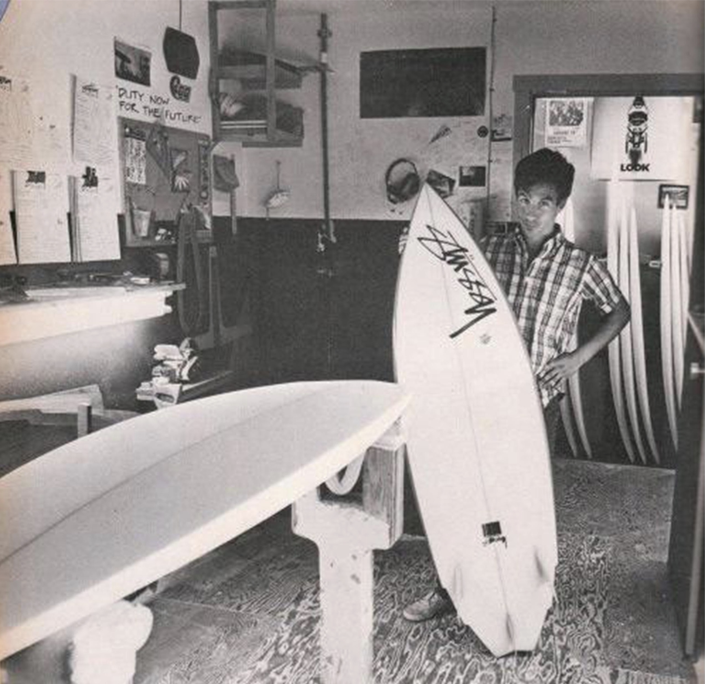
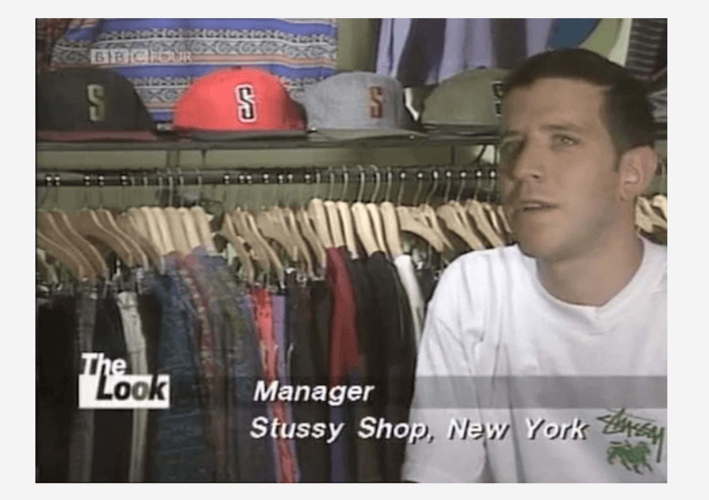
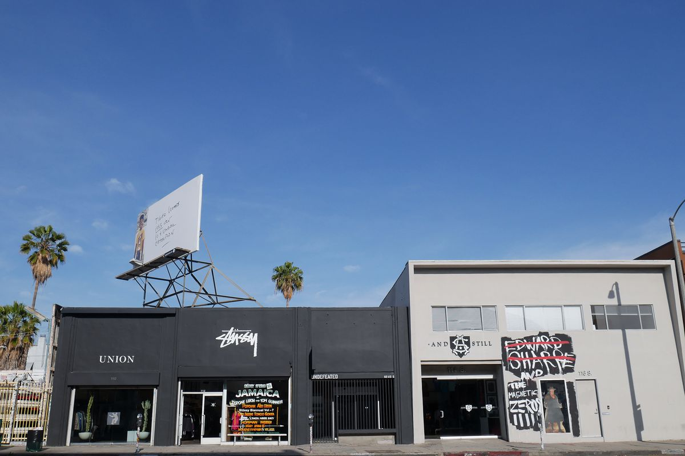

Early Beginings
In 1980, Shawn Stüssy started shaping surfboards in California, incorporating unique graphics inspired by various music genres and his uncle's art. Learning screen printing early in his parents' shop, he initially worked for Russell Surfboards. Stüssy's signature on his boards, reflecting his graffiti influence, became iconic. His foray into clothing was accidental, stemming from his passion for surfing rather than financial ambition, leading to the establishment of his own brand and surf shop in Laguna Beach at 24.
The Start Of The Stüssy Label
Shawn Stüssy, distinguishing his brand from dull surf competitors, partnered with Frank Sinatra Jr. in 1984 to launch a fashion-forward apparel line under the Stüssy name. Innovating with branded caps and high fashion-inspired designs, Stüssy's revenue hit $17 million by 1990. The brand's influence spread globally, inspiring figures like Hiroshi Fujiwara. In 1991, Stüssy and James Jebbia opened the first Stüssy flagship in New York, cementing its place in Soho's burgeoning retail scene.
Moving Into The 90s
In the early 1990s, Stüssy became integral to New York's streetwear scene, diverging from the baggy hip-hop style with a durable, cool aesthetic. James Jebbia's Union store, opening in 1989, was pivotal, eventually convincing Stüssy to stock there, leading to a partnership and the first Stüssy store in New York in 1991. This collaboration expanded to L.A. in '92, combining Stüssy's products with Union's curated brands, a concept that evolved into separate, adjacent stores.
The Current Day
Stüssy has continued to reach a place where few that would question the brand’s continued relevance and staying power. Standing as an outfitter of the cool in multiple subcultures globally, with each collection and collaboration causing mass discussion and desire. Stüssy remains relevant also because streetwear and the culture associated with it is always inherently young. In the current age of the Internet and social media, it’s easy for teens to find what they like and can identify with, whilst also easily filtering the real deal from the fake flash in the pans. As James Jebbia once said “There’s ups and downs in every brand’s history, but I think Stüssy has done a good job of staying the course”.